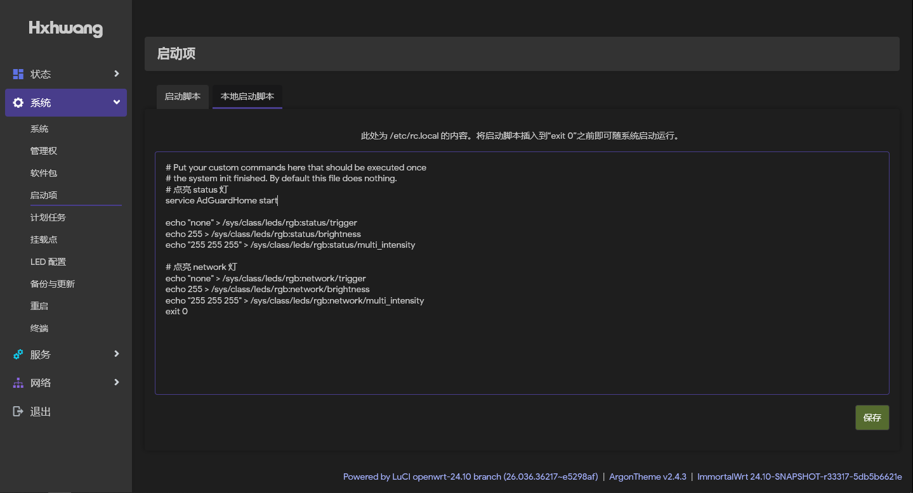
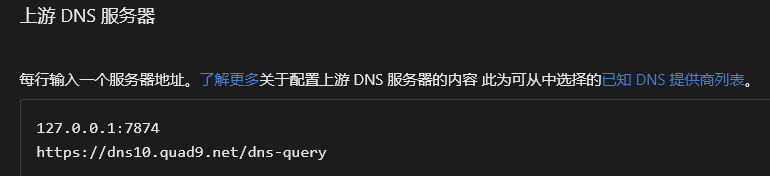
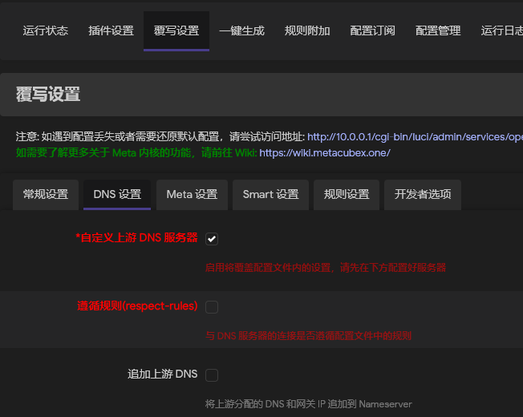
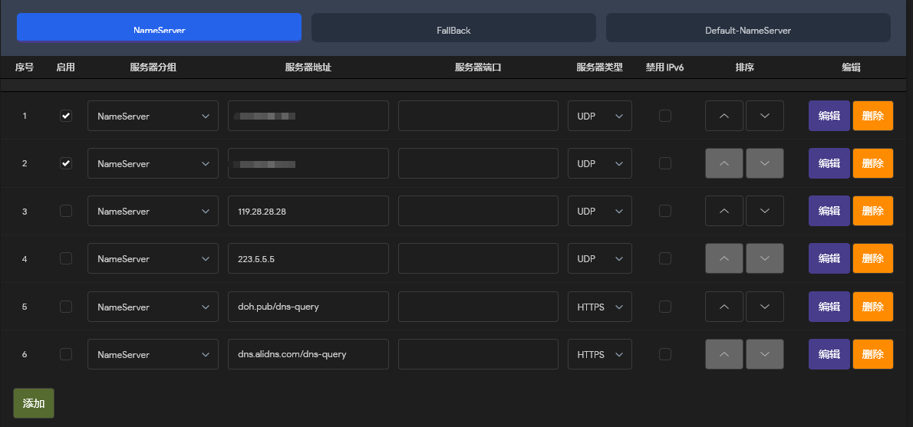

dpkg源
src/gz immortalwrt_core https://mirrors.vsean.net/openwrt/releases/24.10-SNAPSHOT/targets/mediatek/filogic/packages
src/gz immortalwrt_base https://mirrors.vsean.net/openwrt/releases/24.10-SNAPSHOT/packages/aarch64_cortex-a53/base
src/gz immortalwrt_luci https://mirrors.vsean.net/openwrt/releases/24.10-SNAPSHOT/packages/aarch64_cortex-a53/luci
src/gz immortalwrt_packages https://mirrors.vsean.net/openwrt/releases/24.10-SNAPSHOT/packages/aarch64_cortex-a53/packages
src/gz immortalwrt_routing https://mirrors.vsean.net/openwrt/releases/24.10-SNAPSHOT/packages/aarch64_cortex-a53/routing
src/gz immortalwrt_telephony https://mirrors.vsean.net/openwrt/releases/24.10-SNAPSHOT/packages/aarch64_cortex-a53/telephony
adg规则
3.anti-AD命中率https://cdn.jsdelivr.net/gh/privacy-protection-tools/anti-AD@master/anti-ad-easylist.txt
Adguardhome107和108版本需要在启动项中添加service AdGuardHome start exit 0 否则服务不会跟随系统自动启动

同时重定向53端口
上游DNS定义为OpenClash劫持的DNS地址 否则会抢DNS

OpenClash无其他插件冲突 默认可以勾选追加上游DNS 若有例如ADG 取消勾选
Fakeip持久化勾选

只保留NameServer的两个DNS 从光猫处获得 其他全部不勾选 否者会造成微信无法发送收取图片

url: https://gitlab.com/cats-team/adrules/-/raw/main/adblock_plus.txt
name: AdRules AdBlock List Plus
id: 1737240377
- enabled: true
url: https://anti-ad.net/easylist.txt
name: anti-AD
id: 1737240378
- enabled: true
url: https://gcore.jsdelivr.net/gh/TG ... Avenue-Ads-Rule.txt
name: 秋风广告
id: 1737240796
- enabled: true
url: https://gcore.jsdelivr.net/gh/21 ... ules/adblockdns.txt
name: AdBlock DNS
id: 1737242157
- enabled: true
url: https://gcore.jsdelivr.net/gh/xn ... elease/easylist.txt
name: AbBlock List
id: 1737242162
- enabled: true
url: https://adguardteam.github.io/Ho ... ssets/filter_37.txt
name: No Google
id: 1740831448
- enabled: true
url: https://gitlab.com/hagezi/mirror ... dblock/ultimate.txt
name: HaGeZi's Ultimate DNS Blocklist
id: 1741749370
- enabled: true
url: https://adguardteam.github.io/Ho ... ssets/filter_27.txt
name: OISD Blocklist Big
id: 1742093024
- enabled: true
url: https://gitlab.com/hagezi/mirror ... pn-proxy-bypass.txt
name: 防止绕过DNS
id: 1746188696
- enabled: true
url: https://gitlab.com/hagezi/mirror ... ck/nosafesearch.txt
name: 不安全搜索引擎
id: 1746188697
- enabled: true
url: https://gitlab.com/hagezi/mirror ... block/spam-tlds.txt
name: 恶意顶级域
id: 1746188701
- enabled: true
url: https://badmojr.github.io/1Hosts/Pro/adblock.txt
name: 1Hosts (Pro)
id: 1746227690
- enabled: true
url: https://gitlab.com/hagezi/mirror ... ts/dnsmasq/nsfw.txt
name: 防止成人内容
id: 1746788752
- enabled: true
url: https://gitlab.com/hagezi/mirror ... dblock/gambling.txt
name: 防止赌博内容
id: 1746788753
- enabled: true
url: https://gitlab.com/hagezi/mirror ... ock/anti.piracy.txt
name: 防止盗版
id: 1746788754
- enabled: true
url: https://codeberg.org/hagezi/mirr ... ts/adblock/fake.txt
name: 互联网假货
id: 1746788755
- enabled: true
url: https://codeberg.org/hagezi/mirr ... /adblock/dyndns.txt
name: 动态 DNS
id: 1746788756
- enabled: true
url: https://codeberg.org/hagezi/mirr ... /adblock/hoster.txt
name: 恶意主机
id: 1746788757
- enabled: true
url: https://codeberg.org/hagezi/mirr ... ck/urlshortener.txt
name: 阻止链接/URL
id: 1746788758
- enabled: true
url: https://adguardteam.github.io/Ho ... assets/filter_1.txt
name: AdGuard DNS filter
id: 1748158518
- enabled: true
url: https://adguardteam.github.io/Ho ... ssets/filter_59.txt
name: AdGuard DNS Popup Hosts filter